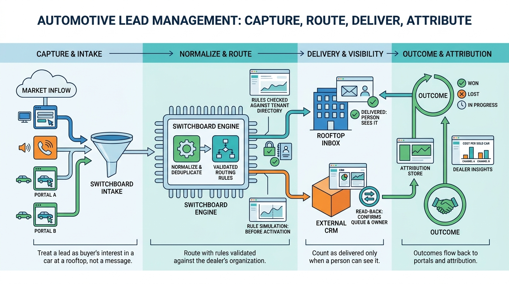

Part IV — DEALER: The Used-Car Workflow
Every Enquiry Counts: Lead Capture, Routing and CRM

Image generated by Google Gemini (gemini-3-pro-image-preview)
Part IV — DEALER: The Used-Car Workflow

Image generated by Google Gemini (gemini-3-pro-image-preview)